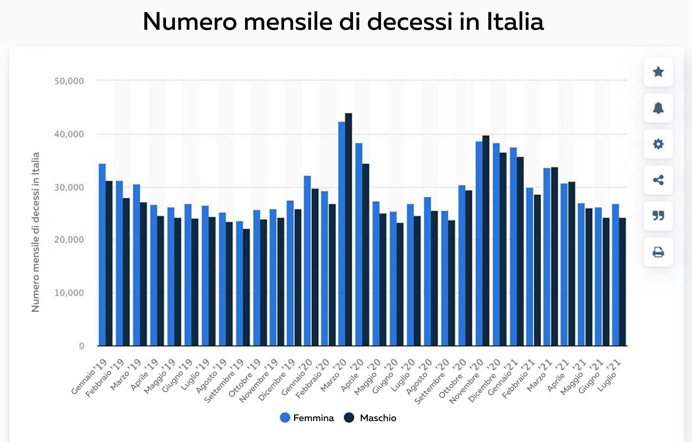

Всего за 7 недель ваши кровеносные сосуды естественным образом очистятся, кровяное давление восстановится, а иммунная система укрепится.
Во время съемок популярной телепередачи произошел инцидент, в котором были замечены медицинские пропагандисты. Один из приглашенных специалистов вдруг начал говорить то, чего не было в сценарии. То, что он сказал, несомненно, разбудило интерес студийной аудитории и зрителей, но, что более важно, это услышали медицинские работники.
Кардиолог публично заявил: "Конечно, в своих передачах они говорят о коронавирусе и вакцинации, но тогда почему они закрывают глаза на другую проблему, от которой ежегодно страдают более 1,3 миллиона человек!". Почему никто не говорит о заболеваниях сердечно-сосудистой системы? Почему молчат о том, что теперь есть способ побороть гипертонию?
Гипертония! Это убийца номер один среди людей. И все продолжают вести себя так, как будто ничего страшного не происходит. Вы не найдете никаких современных средств для решения этой проблемы.
Гипертония считается одним из самых опасных заболеваний. В отличие от многих других болезней, встречающихся у человека, она не приводит к временному ухудшению здоровья. Гипертония неуклонно прогрессирует, постепенно приводя человека к смерти. Гипертония является причиной смерти миллионов людей, она подобна бомбе замедленного действия, которая не взрывается сразу, но со 100% уверенностью рано или поздно разлетится на мелкие осколки. Кроме того, эта болезнь не сопровождается симптомами, которые указывают на ее смертельность. В один день человек чувствует себя хорошо, а на следующий день рука становится сухой, развивается гангрена или в мозгу начинает расти раковая опухоль. Власти и здравоохранение страны просто отмахиваются от этого и принимают любые меры, какими бы бесполезными они ни были, против бессимптомного заболевания, от которого человек страдает уже долгое время. Гипертония неизлечима при таком подходе.
Люди умирают не от вируса, а от гипертонии и ее последствий! Запомните это! - сказал Раффаэле Зербато, который является одним из недавно приглашенных экспертов, в то время как другие его коллеги по исследованию пытались не только опровергнуть его слова, но и были буквально ошеломлены.
На рисунке видно, что смертность от COVID-19 в течение всего периода пандемии в 2020 году составляла относительно незначительную долю от общего числа избыточных смертей.
Статистика просто невероятна! Пандемия привела к 132 000 смертей, а около 210 000 - это смерти от гипертонии.
Самое странное и в то же время печальное, что самое серьезное последствие вируса, гипертония, она развивается в 75,87% случаев! Но если бы у людей не было этого заболевания, катастрофически разрушающего иммунную систему, то вирус, которым они поражены, протекал бы так же бессимптомно. И в этом случае эти пациенты попали бы в самую серьезную группу риска. И снова об этом никто не говорит, потому что сразу возникает вопрос: что именно делается для борьбы с этим коварным заболеванием?
Все участники передачи были в недоумении. Специалисты и врачи клиники начали спорить, перебивая друг друга. Передача была прервана и сразу же последовала рекламная пауза, во время которой сотрудники канала общались с Раффаэле Зербато.
Эта передача не вышла в эфир. Но телезрители надолго запомнили, что происходило в студии во время ее записи.
Мы решили провести свое расследование и найти этого специалиста.
- Кажется, что все его коллеги уже знают о скандале, в который он был вовлечен во время записи программы. Как вы не побоялись сделать такое заявление?
Я прекрасно понимал, чем рискую, но не мог молчать. Каждый пытается справиться с последствиями, но никто не решает проблему и не лечит саму болезнь. Я врач, я дал клятву попытаться остановить это.
Я очень рад, что вы обратились ко мне, и могу повторить то, что уже сказал, подытожив тем самым свои предыдущие высказывания. Пандемия пройдет, будет вакцина, которую будут использовать постоянно, люди переживут это, как и любую другую эпидемию, которая не раз случалась на протяжении нашей истории. Однако такие вирусы, как амбиции, жадность и ложь, никуда не денутся. От этих вирусов нет вакцины.
Что вы имеете в виду?
Я имею в виду болезни, с которыми наши врачи борются годами. Я занимаюсь сердечно-сосудистыми заболеваниями, в том числе гипертонией. А в моей профессиональной сфере ложь - одно из самых распространенных явлений.
Я уверен, что лечение заболеваний опорно-двигательного аппарата, желудочно-кишечного тракта и любых других заболеваний можно проводить на основе анализа симптомов, не только облегчая болезнь, но и полностью освобождая пациента от болезни и восстанавливая здоровье.
Причиной этого являются фармацевтические компании и их представители, которые работают с врачами по всей стране на платной основе. И сейчас, когда что-то может еще больше напугать людей, компании только увеличивают свои прибыли. Продается все, по каждому симптому отдельно, потому что в случае смерти это все равно будет ассоциироваться с пандемией. Я все это вижу и понимаю, и меня ужасает происходящее.
В нашей стране нет лечения гипертонии.
- Вы хотите сказать, что все эти современные препараты от гипертонии неэффективны?
Лекарства от гипертонии, которые выписывают пациентам, - это главная цель перекачки денег из карманов пациентов в карманы олигархов, которые сделали свои состояния на продаже этих лекарств.
Это легализованные наркотики, если подумать. Пациент принимает таблетки, его состояние улучшается. Препарат перестает действовать, и давление снова повышается. Таков принцип действия всех наркотиков. Чтобы почувствовать себя лучше, достаточно принять новую дозу.
Самое главное - понять следующее: в чрезвычайной ситуации химические препараты необходимы и играют важную роль. Например, во время Первой мировой войны героин использовался в лагерях для улучшения состояния раненых солдат, позволяя избежать боли и смерти от травматического шока.
Однако если постоянно принимать таблетки, они, как и героин, просто разрушат ваше здоровье. Не так быстро, но принцип их действия точно такой же, и вам порекомендуют принять еще несколько таблеток, чтобы избежать последствий приема наркотика. Чем их больше, тем лучше для владельцев аптек и фармацевтических компаний.
- Однако некоторые люди употребляли наркотики.
- Даже потребители наркотиков могут прожить долгую жизнь. Но что это за жизнь?
Когда повышается давление, мужчины в 50 лет уже страдают от простатита и половой дисфункции. Когда мужчина испытывает постоянную усталость, ожирение, отекают ноги, становится трудно ходить, пальцы затекают. Затем в сосудах появляются тромбы, что приводит к инфарктам и инсультам.
Очень небольшое количество таблеток, принимаемых в течение длительного времени и постоянно, может вызвать рак. Посмотрите на статистику по раку. Это настоящая эпидемия!
Я не имею в виду мелкие проблемы, такие как нарушения сна, звон в ушах, снижение зрения. Можно было бы написать целый список. Но причина всегда одна и та же: высокое кровяное давление, ведущее к гипертонии, которую никто не пытается вылечить. Но уже есть препараты для решения этой проблемы, и они дают отличные результаты.
Средство от гипертонии, которое не продается в аптеках.
- Во время записи программы он попытался рассказать об этом эффективном средстве от гипертонии, но его буквально выгнали из студии. Что же это за средство? И почему фармацевты сторонятся его, как демон ладана, при одном только упоминании его названия?
Я говорил о составе натурального продукта Cardiofort. Это уникальная смесь трав. Да, все очень просто! Главное достоинство этой натуральной смеси - уникальное сочетание пустырника сердечного, листьев оливкового дерева, хмеля, облепихи, фортунеллы и рапса. Каждый из этих ингредиентов, собранных в нужное время, а также в тот период, когда растение наиболее эффективно, имеет самую высокую концентрацию целебных веществ. В правильном процентном соотношении эти ингредиенты способны улучшить восстановление артериального давления более чем в 7 раз.
Cardiofort - это разработка Центра молекулярной биологии. Его еще называют природным убийцей гипертонии, ведь Cardiofort нормализует артериальное давление и сердечный ритм, очищает сосуды от холестерина, восстанавливает их тонус и эластичность.
Капли Cardiofort активизируют процессы восстановления давления и предотвращают скачки. Особенно если вы пройдете несколько циклов лечения. Всего за 7 недель вы избавитесь от гипертонии.
За разработку Cardiofort команда ученых получила международную награду в области кардиологии. За инновационный подход к лечению гипертонии. Однако об этом прорыве никто не слышал.
Медицинские представители буквально ненавидят эти капли. У них есть тысячи различных лекарств, продажа которых увеличивает их прибыль. Препарат не может сломать существующую схему и принцип действия. Уже после семи недель применения у людей отпала необходимость посещать аптеки.
Вот почему капли Cardiofort вызывают столько ненависти. Его никто не анонсирует. Хотя он признан во всем мире, имеет все необходимые сертификаты, подтверждающие его научную эффективность, тысячи довольных пациентов. Поэтому этот продукт бойкотируют. Все делают вид, что его не существует. А когда я заговорил об этом в эфире, мне начали открыто угрожать.
Начните терапию самостоятельно
- Как работает Cardiofort?
Основная цель Cardiofort - очистить кровеносные сосуды. От этого зависит функционирование организма.
Капли Cardiofort очищают кровеносные сосуды в несколько этапов:
- Улучшают работу сердечно-сосудистой системы
- Укрепляют кровеносные сосуды
- Очищают сосуды от холестерина
- Нормализуют артериальное давление
- Восстанавливают прочность и гибкость кровеносных сосудов и капилляров
- Улучшают сон, настроение и общее самочувствие
Этот процесс самовосстановления называется самообновлением. Эти процессы естественны, а Cardiofort является их катализатором; главное, что он запускает процесс самообновления.
Избавьтесь от семи болезней за одну неделю
- Каковы результаты приема капель Cardiofort?
1. Нормализация уровня сахара в крови.
Капли оказывают чрезвычайно благоприятное воздействие. В частности, он снижает резистентность к инсулину. Биологически активные компоненты проникают в клетки мышц, жировой ткани и печени и оказывают действие, которое приводит к лучшему усвоению гормона в крови. В научной медицинской литературе этот процесс известен как вторичный метаболизм, то есть образование вторичных клеток. В результате со временем клетки начинают энергичнее потреблять глюкозу, что приводит к снижению ее содержания в крови. Это самый безопасный для организма способ потребления глюкозы.
2. Восстановление кровеносных сосудов.
Восстанавливаются стенки кровеносных сосудов и заживают микроповреждения в них. Сосуды очищаются от холестерина и других загрязнений. Тромбы также исчезают, очищая сосуды и восстанавливая капилляры. В результате артериальное давление не повышается, исчезает усталость и бессонница, а раны и порезы заживают быстрее.
3. Улучшает здоровье кожи, костей и мышц.
Восстанавливается даже сильно поврежденная кожа. Раны заживают, кожа перестает обвисать и высыхать. То же самое происходит с костями, их здоровый состав восстанавливается, и они перестают быть хрупкими. Все ткани восстанавливаются, а мышцы снова становятся эластичными.
4. Улучшает зрение.
Даже сильно ослабленное зрение постепенно начинает восстанавливаться.
- Зрение улучшается на 0,5-2,1 единицы.
- Нормализуется глазное давление
- Уменьшаются симптомы катаракты
5. Устраняются проблемы с лишним весом.
Лишний вес - это симптом, который значительно ухудшает состояние пациента с гипертонией до 4-5 раз. Кроме того, одним из эффектов лечения каплями Cardiofort является снижение веса.
6. Восстановление эрекции.
Многие пациенты с диагнозом гипертония страдают от эректильной дисфункции. Одним из самых удивительных эффектов капель Cardiofort является нормализация уровня тестостерона и восстановление здоровой эрекции. Даже в тех случаях, когда возраст пациентов превышает 70 лет. Мужчины с удовлетворением и радостью обнаруживают, что их мужественность полностью восстановлена.
7. Начинает функционировать иммунная система.
Улучшается кровоснабжение костных тканей, участвующих в синтезе иммунных клеток. Это также приводит к повышению защитных функций организма.
Иммунная система защищает нас не только от вирусов. Главная функция сильной иммунной системы - защита организма от раковых клеток. Здоровая, сильная иммунная система вовремя распознает и уничтожает раковые клетки. Это помогает предотвратить развитие рака.
Даже если иммунная система эффективна лишь на 50%, она создает непреодолимый барьер против вирусов. И это чрезвычайно важно сегодня.
Представитель профсоюза фармацевтов прервал наш телефонный разговор, как только мы упомянули капли Cardiofort.
Мы позвонили члену профсоюза фармацевтов, чтобы выяснить, почему в аптеках нет капель Cardiofort.
- Добрый день, господин Иванов! Не могли бы вы сказать, почему в аптеках избегают упоминания о каплях Cardiofort? Вы слышали о таком средстве?
- Почему вы ведете себя вызывающе?! Я не отвечаю на эти вопросы! Они вас вообще не касаются!
- Мы слышим, как кладут трубку телефона...
Как купить Cardiofort?
После такого разговора с представителем Союза фармацевтов нашей страны становится ясно, что рассматриваемых капель в аптеках нет и вряд ли они там появятся в ближайшее время. Но можно ли его приобрести?
- Да, все, желающие купить Cardiofort могут сделать это прямо с завода, сделав заказ через интернет.
- Почему Cardiofort можно заказать только через интернет?
По трем основным причинам:
- Гарантия качества. Cardiofort отправляется покупателю производителем.
- Защита от перекупщиков. Чтобы никто не смог перепродать капли по цене, увеличенной в 10-20-30 раз.
- Быстрая доставка курьером
Скидка для всех нуждающихся пациентов в каждом регионе
В настоящее время существует программа социальной поддержки для всех. В рамках этой программы вы можете заказать Cardiofort со скидкой. Это является частью льготной программы профилактики гипертонии.
Скидка предоставляется в основном покупателям старше 47 лет, которые проживают в регионах, где эпидемиологическое состояние находится в зоне риска.
Кроме того, мы рекомендуем вам не терять времени! Второго шанса у вас не будет. Неизвестно, как долго продлится эта программа и как долго Cardiofort будет доступен. Травы собираются в определенные дни года, летом и осенью, и запасы не бесконечны!
Получите Cardiofort прямо сейчас!
Чтобы получить Cardiofort в рамках привилегированной программы, вам нужен только телефон.
Введите свой номер телефона в форму запроса и нажмите "Получить Cardiofort".
Внимание! Вы можете сделать только один запрос на один номер телефона!
В настоящее время заявки принимаются и обрабатываются круглосуточно, но в связи со значительной загруженностью наших сотрудников, возможно, вам придется немного подождать.
Внимание!
Примечания: Помните , что заказ через официальную форму, гарантия качества.
Официальная форма заказа гарантирует 100% уверенность в продавце и качестве поставляемого товара. Это означает, что вы находитесь на официальном сайте и вам будет выслан подлинный Cardiofort, а также вы получите необходимую консультацию и поддержку по телефону.
Отзывы